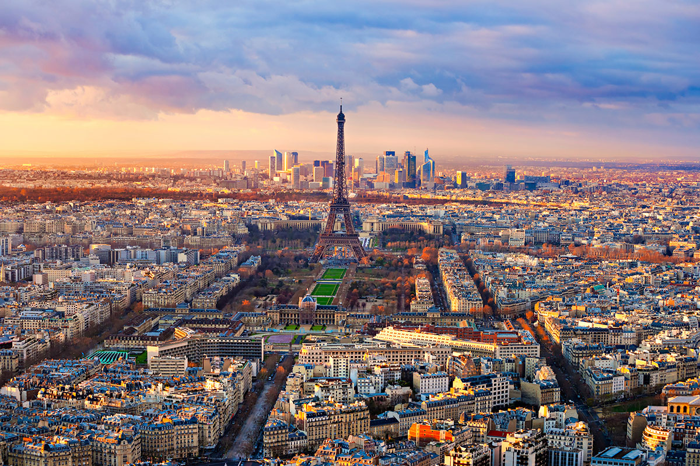
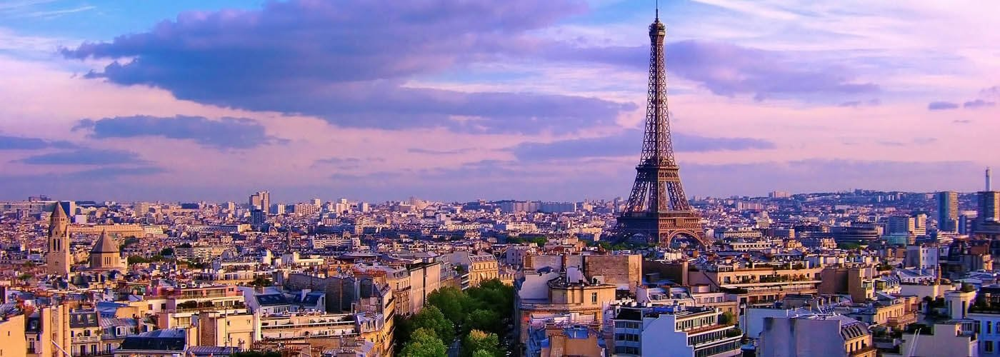
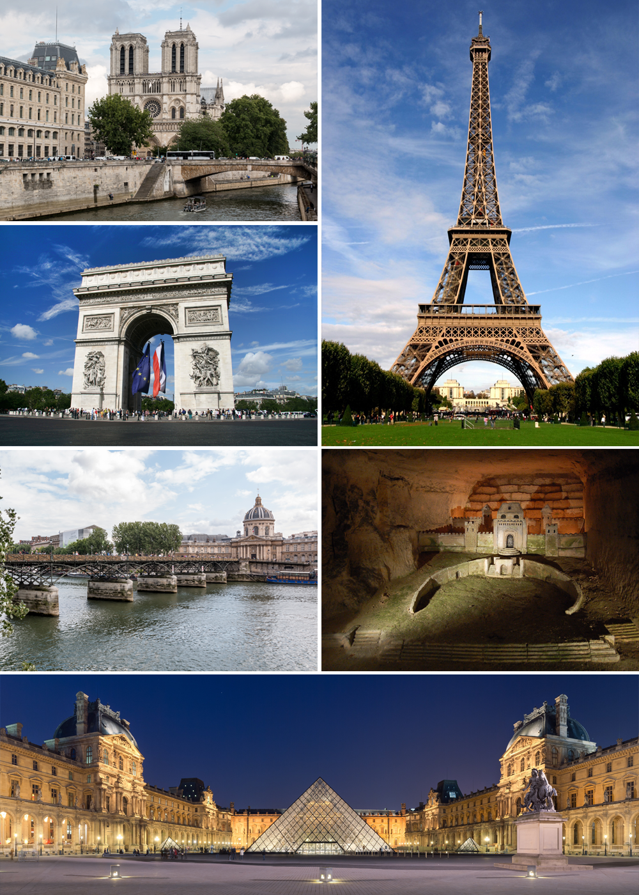
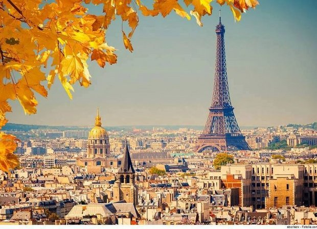
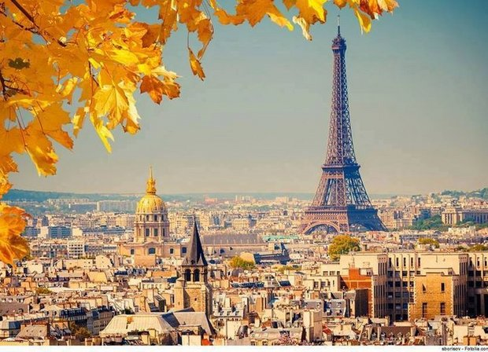

Пари́ж (фр. Paris [paˈʁi] ℹ︎ /пари́/) — город, столица Франции; административный
центр региона
Иль-де-Франс. Образует коммуну и департамент, ...
Франция
· История Парижа
· Флаг
· Герб Парижа



 

Пожаловаться на картинки
Перевести эту страницу
Топонім Париж походить від назви кельтського
племені паризіїв (Parisii). Сучасна назва є похідною
від латинської назви міста, що спершу називалося ...
Описывать Париж по большом счету бессмысленно.
Не потому, что писать не о чем — боже
упаси! Просто этот город как ни один город в мире не хочет ...
Достопримечательности Парижа – Эйфелева башня, Лувр, Нотр-Дам, да здесь
на каждом углу
памятник или монумент. Какие нужно увидеть ...
Париж — столица Франции и крупнейший город страны. Он расположен на реке Сена в
северной
части Франции, в центре региона Иль-де-Франс ...
Туризм в Париже: благодаря 3 432 977 отзывам туристов путешественники могут почерпнуть
всю
необходимую информацию о Париже на TripAdvisor.
{kind=link}
Столица Франции
Пари́ж — город, столица Франции; административный центр региона
Иль-де-Франс. Образует коммуну и департамент, разделённый на 20
округов. Население — 2,274 млн человек, пятый по величине город
Евросоюза. Википедия Площадь: 105,4 км² Погода: 12°C, ветер З, 8 км/ч, влажность 83 % Население: 2,244 миллиона (2010 г.) Гостиницы: Средняя стоимость номера в трехзвездочной гостинице – 4 485 грн., а в пятизвездочной – 13 075 грн.. Смотреть гостиницы Колледжи и университеты: Парижский университет ЕЩЁ Достопримечательности Ещё 10+ Эйфелева башня Лувр Триумфальная арка Диснейленд Париж Собор Парижской Богоматери Похожие запросы Ещё 5+ Франция Лондон Рим Европа Марсель Париж: подробнее Оставить отзыв